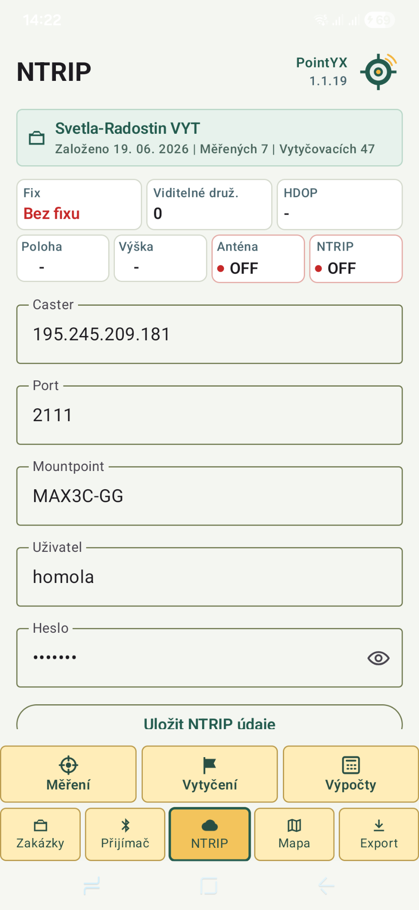
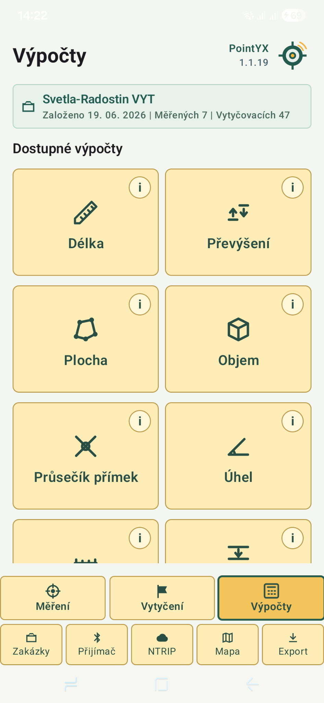

Měření bodů
Rychlý sběr bodů, kódování a ukládání měření v zakázce.
Android GNSS software
PointYX propojí GNSS přijímač, RTK korekce, NTRIP, měření bodů, vytyčení, mapy a export dat do jedné přehledné mobilní aplikace.


Navrženo pro terénní práci v geodezii, stavebnictví a GIS.
Funkce
Rychlý sběr bodů, kódování a ukládání měření v zakázce.
Přehledné navádění k bodu s tolerancí a kontrolním přeměřením.
Připojení externí antény přes Bluetooth a správa výšky antény.
Nastavení casteru, portu, mountpointu a připojení k RTK korekcím.
Mapové podklady, ortofoto a katastr v jednom pracovním prostředí.
Výstupy TXT, DXF, záloha zakázky a GNSS protokol pro dokumentaci.
Ukázky aplikace




Proč PointYX
Rychlé ovládání. Hlavní funkce jsou dostupné přímo ze spodní navigace.
Práce se zakázkami. Body, měření, vytyčení a exporty drží pohromadě v jedné zakázce.
Připraveno pro RTK. Bluetooth přijímač, výška antény a NTRIP korekce na jednom místě.
Export
Exportuj zaměřené body pro další zpracování. Připraveno pro běžné geodetické a stavební workflow.

FAQ
Ano. Aplikace je navržená pro práci s externím GNSS přijímačem a NTRIP korekcemi.
Ano. PointYX je mobilní aplikace pro Android.
Ano. Součástí exportů je DXF, TXT, záloha zakázky a GNSS protokol.
PointYX 1.1.19
Hledáme uživatele z praxe pro testování a zpětnou vazbu.